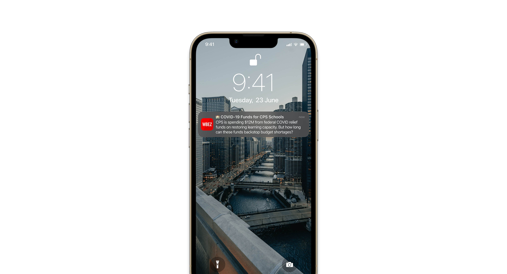

Internship project, 16 Weeks (Mid January 2022 - Mid May 2022)

WBEZ Browse Screen Redesign — Improving Browse Screen Engagement
Overview
Internship project, 16 Weeks (Mid January 2022 - Mid May 2022)
Team: 1 product director, 1 product manager, 1 product associate, 3 engineers, and 1 product designer (that’s me)
Tools: Figma, Miro, Zeplin
Project start
Experience analysis
Post launch
- Push authorization conversion rate for the first month ranged between 2% - 6% (range estimate due to unreliable tracking in the beginning)
- Users may be toggling to opt-out of push notifications due to an inefficient end flow
- Introduce a more appealing push authorization screen that highlights the difference in notification frequencies/type
- Re-engagement campaigns targeted to users who declined the initial ask
- Omitting the ending screen to the notifications setting panel after the user has accepted notifications through the system prompt
Final stretch